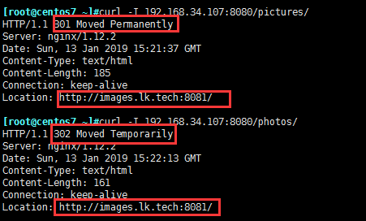

ngx_http_access_module
上下文：http, server, location, limit_except
实现基于ip的访问控制功能
1、allow address | CIDR | unix: | all;
2、deny address | CIDR | unix: | all;
自上而下检查，一旦匹配，将生效，条件严格的置前
示例：
location / {
deny 192.168.1.1;
allow 192.168.1.0/24;
deny all; }
ngx_http_auth_basic_module模块
上下文：http, server, location, limit_except
实现基于用户的访问控制，使用basic机制进行用户认证；
1、auth_basic string | off;
2、auth_basic_user_file file;
location /admin/ {
alias /webapps/app1/data/;
auth_basic "Admin Area";
auth_basic_user_file /etc/nginx/.ngxpasswd;
}
注意：口令文件
1、明文文本：格式name:password:comment
2、加密文本：由htpasswd命令实现,htpasswd命令由httpd-tools所提供；
ngx_http_stub_status_module模块
上下文:server, location
用于输出nginx的基本状态信息；
示例:
Active connections: 291
server accepts handled requests
16630948 16630948 31070465
Reading: 6 Writing: 179 Waiting: 106
Active connections: 活动状态的连接数；
accepts：已经接受的客户端请求的总数；
handled：已经处理完成的客户端请求的总数；
requests：客户端发来的总的请求数；
Reading：处于读取客户端请求报文首部的连接的连接数；
Writing：处于向客户端发送响应报文过程中的连接数；
Waiting：处于等待客户端发出请求的空闲连接数；
stub_status;
配置示例：
location /basic_status {
stub_status;
access_log off; #关闭记录日志,因为反向代理如果并发大，会导致IO吃紧
}
ngx_http_gzip_module
上下文:http，server，location
在CPU等硬件资源不稀缺的情况下，带宽流量的稀缺使得资源压缩必须启用
启用资源压缩功能，虽然可以大大减小了带宽的消耗，要注意适用的场景；
1.比如当前服务器CPU负载较大，压缩功能本身就会消耗更多的CPU资源，如果启用
对服务器的压力就会更大
2.应该只对文本内容进行压缩，视频、图片、流媒体等本身就已经是有压缩比的资源
3.实现逻辑：先使用压缩过滤器过滤出来有很好压缩比的资源(css,js,html)等文本
再定义压缩规则
1、gzip on | off;
启用或禁用压缩
上下文:http，server，location，if in location
2、gzip_comp_level level;
gzip压缩级别，范围为1到9，值越大，压缩效率越高，消耗cpu资源越大
3、gzip_disable regex ...;
对具有与任何指定正则表达式匹配的“User-Agent”标头字段的请求禁用gzipping响应
4、gzip_min_length length;
启用压缩功能的响应报文大小阈值；
5、gzip_buffers number size;
支持实现压缩功能时为其配置的缓冲区数量及每个缓存区的大小；
默认情况下，缓冲区大小等于一个内存页面
6、gzip_proxied off | expired | no-cache | no-store | private | no_last_modified | no_etag | auth | any ...;
nginx作为代理服务器接收到从被代理服务器发送的响应报文后，在何种条件下启用压缩功能的；
off：对代理的请求不启用
no-cache, no-store，private：表示从被代理服务器收到的响应报文首部的Cache-Control的值为此三者中任何一个，则启用压缩功能；
7、gzip_types mime-type ...;
压缩过滤器，仅对此处设定的MIME类型的内容启用压缩功能；
8.gzip_http_version ...
压缩版本用于设置识别HTTP协议版本,默认1.1
示例：
gzip on;
gzip_comp_level 6;
gzip_min_length 64;
gzip_proxied any;
gzip_types text/plain application/x-javascript text/css application/xml;
ngx_http_ssl_module
上下文:http, server
代理服务用nginx不采用LVS的一个原因就是LVS不支持SSL的代理，nginx可以实现
面对客户端使用https协议，面对后端服务器集群使用http协议，所以有时nginx反代也叫https的会话卸载器
如果是四层调度，https访问必须是客户端与后端服务器之间建立；
如果两段式连接，对内调度是明文的，把压力放在前端代理服务器上，本身前端调度器CPU资源消耗不是很大
1.ssl on | off;
2、ssl_certificate file;
当前虚拟主机使用PEM格式的证书文件；
3、ssl_certificate_key file;
当前虚拟主机上与其证书匹配的私钥文件；
4、ssl_protocols [SSLv2] [SSLv3] [TLSv1] [TLSv1.1] [TLSv1.2];
支持ssl协议版本，默认为后三个；
5、ssl_session_cache off | none | [builtin[:size]] [shared:name:size];
builtin[:size]：使用OpenSSL内建的缓存，此缓存为每worker进程私有；
[shared:name:size]：在各worker之间使用一个共享的缓存；
6、ssl_session_timeout time;
客户端一侧的连接可以复用ssl session cache中缓存 的ssl参数的有效时长；
7.ssl_ciphers ciphers
加密算法
8. ssl_protocols [SSLv2] [SSLv3] [TLSv1] [TLSv1.1] [TLSv1.2] [TLSv1.3];
启用指定的协议
配置示例：
生成私钥和证书：
openssl genrsa -out nginx.key 2048
openssl req -new -x509 -key nginx.key -out nginx.crt -days 3650 -subj "/CN=www.a.com"
配置主体：
server {
listen 443 ssl;
server_name www.a.com;
root /vhosts/ssl/htdocs;
ssl on;
ssl_protocols TLSv1.1 TLSv1.2;
ssl_ciphers AES128-SHA:AES256-SHA:RC4-SHA:DES-CBC3-SHA:RC4-MD5;
ssl_certificate /etc/nginx/ssl/nginx.crt;
ssl_certificate_key /etc/nginx/ssl/nginx.key;
ssl_session_cache shared:sslcache:20m;
}
为减少处理器负载，建议使用：
设置worker processes等于处理器数，
启用 keep-alive连接，
启用 shared 会话缓存，
禁用builtin会话缓存，
并可能增加session_timeout（默认为5分钟）：
ngx_http_rewrite_module
将用户请求的URI基于regex所描述的模式进行检查，而后完成替换
url重写:
1.客户端访问URL被重写到另外一个路径了
http://www.a.com/a/1.jpg ---> http://images.a.com/1.jpg
2.全站ssl加密时，将用户访问的http://请求全部被重写到https://的虚拟主机上
http://www.a.com/images/1.jpg--->https://www.a.com/1.jpg
rewirte的处理逻辑：
1.将用户请求的URL基于(regex)正则表达式的查找，而后完成替换即可(replacement)
2.如果出现server中两个location互相rewrite，则会出现死循环的现象，所以就引入
了last和break的两个机制
3.last表示接着检查其他rewrite，break表示匹配到当前的rewrite.就不检查其他的
rewrite了这样就避免了死循环
1、rewrite regex replacement [flag]
上下文:server, location, if
将用户请求的URI基于regex所描述的模式进行检查，匹配到时将其替换为replacement指定的新的URI；
注意：如果在同一级配置块中存在多个rewrite规则，那么会自下而下逐个检查；被某条件规则替换完成后，会重新一轮的替换检查，因此，隐含有循环机制；[flag]所表示的标志位用于控制此循环机制；
如果replacement是以http://或https://开头，则替换结果会直接以重向返回给客户端；
301：permanent,永久重定向；
302：redirect,临时重定向；
[flag]：
last：重写完成后停止对当前URI在当前location中后续的其它重写操作，而后对新的URI启动新一轮重写检查；提前重启新一轮循环；
break：重写完成后停止对当前URI在当前location中后续的其它重写操作，而后直接跳转至重写规则配置块之后的其它配置；结束循环；
redirect：重写完成后以临时重定向方式直接返回重写后生成的新URI给客户端，由客户端重新发起请求；浏览器的URL地址显示跳转后的地址
permanent:重写完成后以永久重定向方式直接返回重写后生成的新URI给客户端，由客户端重新发起请求；浏览器的URL地址显示跳转后的地址
例：
rewrite ^(/download/.*)/media/(.*)\..*$ $1/mp3/$2.mp3
rewrite ^/bbs/(.*)$ http://www.magedu.com
http://192.168.80.27/bbs/ --> http://www.magedu.com/
redirect和permanent区别

2、return
上下文:server, location, if
停止处理并将指定的内容返回code给客户端
return code [text];
return code URL;
return URL;
3、rewrite_log on | off;
上下文:http,server,location, if
是否开启重写日志；
4、if (condition) { ... }
上下文:server, location
引入一个新的配置上下文 ；条件满足时，执行配置块中的配置指令；
condition：
比较操作符：
==
!=
~：模式匹配，区分字符大小写；
~*：模式匹配，不区分字符大小写；
!~：模式不匹配，区分字符大小写；
!~*：模式不匹配，不区分字符大小写；
文件及目录存在性判断：
-e, !-e
-f, !-f
-d, !-d
-x, !-x
例：
if ($http_user_agent ~ MSIE) {
rewrite ^(.*)$ /msie/$1 break;
}
if ($http_cookie ~* "id=([^;]+)(?:;|$)") {
set $id $1;
}
if ($request_method = POST) {
return 405;
}
5、set $variable value;
上下文:server, location, if
用户自定义变量 ；
例：
location /download/ {
if ($forbidden) {
return 403;
}
if ($slow) {
limit_rate 10k;
}
rewrite ^/(download/.*)/media/(.*)\..*$ /$1/mp3/$2.mp3 break;
}
ngx_http_referer_module
上下文:server, location
1、valid_referers none | blocked | server_names | string ...;
定义referer首部的合法可用值；用于防盗链
none：请求报文首部没有referer首部；
blocked：请求报文的referer首部没有值；
server_names：参数，其可以有值作为主机名或主机名模式；
arbitrary_string：直接字符串，但可使用*作通配符；
regulare xpression：被指定的正则表达式模式匹配到的字符串；要使用~打头，例如 ~.*\.images\.com；
配置示例：
先定义valid_referers的允许连接网站，再通过if判断如果不是在valid_referers中定义的网站，就返回一张图片或者文字说明
valid_referers none block server_names 172.18.0.2 *.a.com *.ma.com ma.* ~\.mage\.;
if($invalid_referer) {
return http://www.ma.com/invalid.jpg;
}